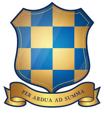
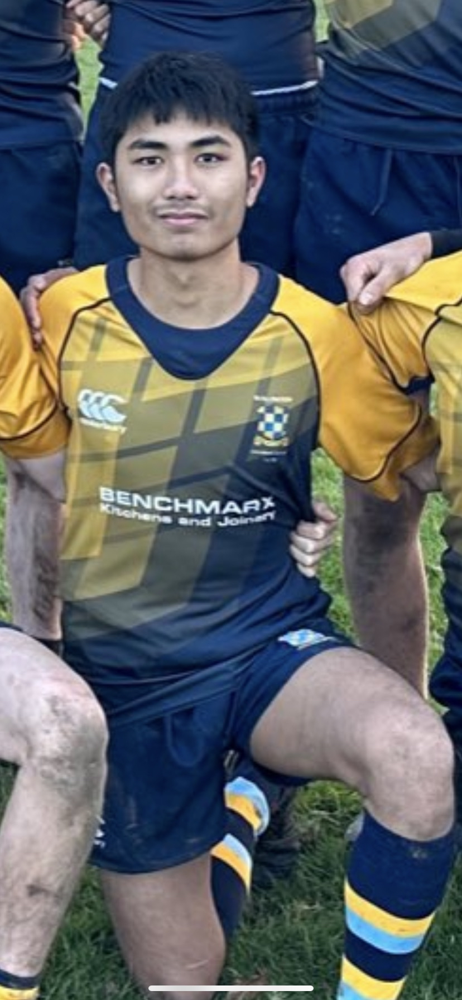

Wallington County Grammar School


I spent 7 years at WCGS from year 7 though to Sixth Form pursuing my GCSEs and A-Levels as well as school sports specifically rugby.
GCSEs
- Grade 8: Maths, Physics
- Grade 7: Biology, Chemistry, RS, PE, Computer Science
- Grade 6: English literature, English language, Spanish, Geography
A-Levels
- Computer Science: A
- Maths: B
- Philosophy: B